Home
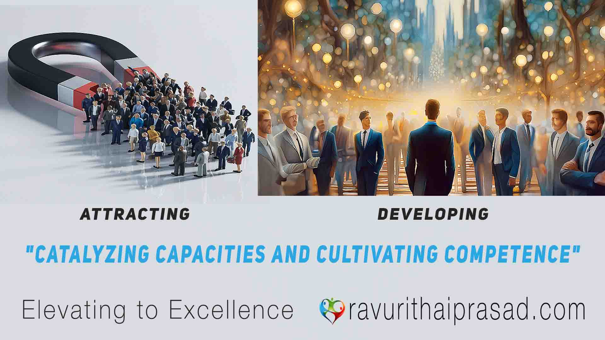
Attracting Talented Profession and building Capabilities is my main Gamut.
Director of Communications:
My KOL expertise makes me a master storyteller. I can craft compelling narratives for the company, amplify brand voice, and build strong relationships with media and influencers. Also, I can attend to trouble-shooting and instant problem solving in Damage Repair situations.
Investor Relations Specialist:
I am confident of bridging the gap between the company and investors. Leverage my on-boarding experience to guide new directors and translate complex information into clear communication that inspires investor confidence.
Corporate Secretary:
Governance is my forte. Ensure board compliance and smooth operations with my knowledge of regulations and expertise in on-boarding directors.
Risk Management Consultant:
"Audacity clash" hints at a risk-management superpower. (Assuming it relates to risk assessment) Identify and mitigate vulnerabilities, protecting the company's future with your proactive approach.
Welcome
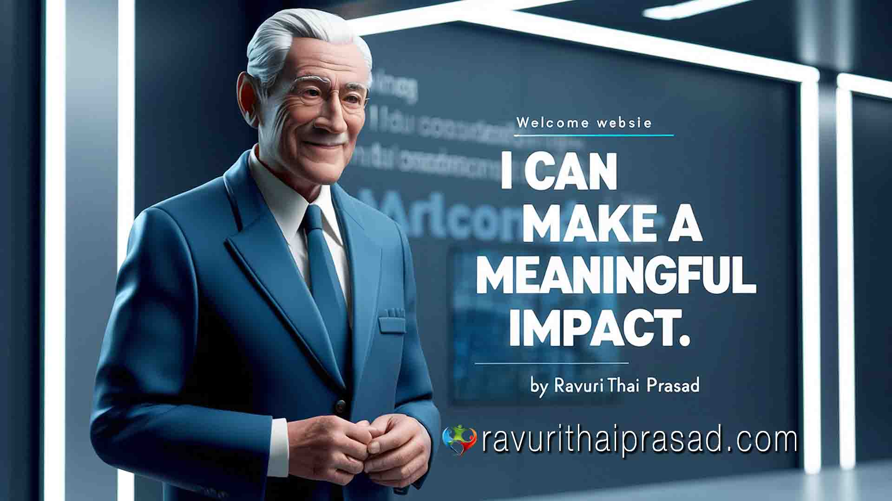Unlike many solo consultancies that struggle to deliver transformative results, I can succeed where others fall short. My focus is on unique and in-demand specialties that are critical for success at the highest levels of organizations. This focus empowers my solo consultancy to deliver the meaningful impact that transcends what traditional online consultancies cannot offer. Welcome to a paradigm shift in business optimization.
About Us
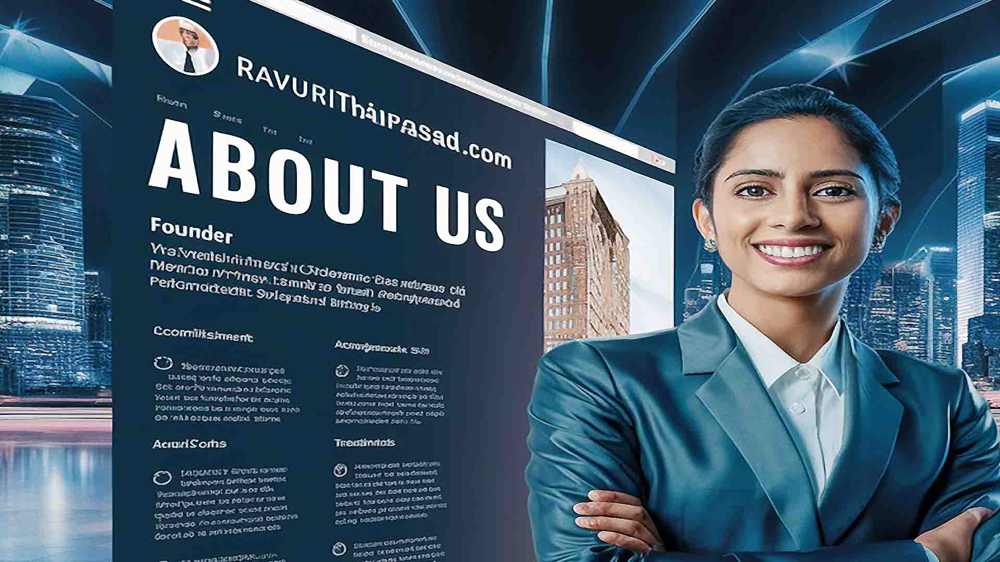
I am a Chief Consultant for Small and medium-sized enterprises (SMEs) and start-up companies as they often face formidable challenges that can hinder their growth and success, such as disorganized governance, inadequate on-board services, lack of effective Key Opinion Leadership (KOL) and finally Audacity clashes between talented professionals and experienced senior hierarchical C-suite executives

While change is inevitable, in taking up challenging changes, at ravurithaiprasad.com, my solo consultancy firm I can successfully solve the problems ranging from On-Board Directors to Talent Versus C-Suite and can navigate important positive changes in these areas where it requires a strategic approach.
I work closely with Companies to optimize change processes and foster a culture of creativity and innovation, both crucial for long-term growth. Through my strategies, disruptions can be minimized, empowering SMEs to thrive in this ever-changing landscape.
I am Special
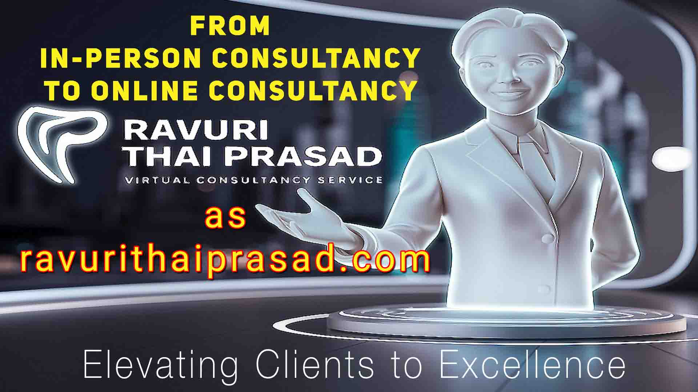As a golden ager with over 50 years of successful in-person consultancy serving 300+ clients, I'm bringing my expertise online.
My primary goal is to empower SMEs, start-ups, Talented and knowledgeable qualified individuals, professionals, and organizational teams to unlock their full potential. My focus is on tapping into hidden talent, amplifying knowledge, leveraging wisdom, and cultivating strategic leadership skills to drive success in today's competitive landscape. I have held the position of chair on numerous SME Boards of Directors and have served as an inspiring advisor, author, and keynote speaker within the corporate community. My expertise has consistently delivered significant results for hundreds of SMEs, start-ups, and countless individuals and teams.
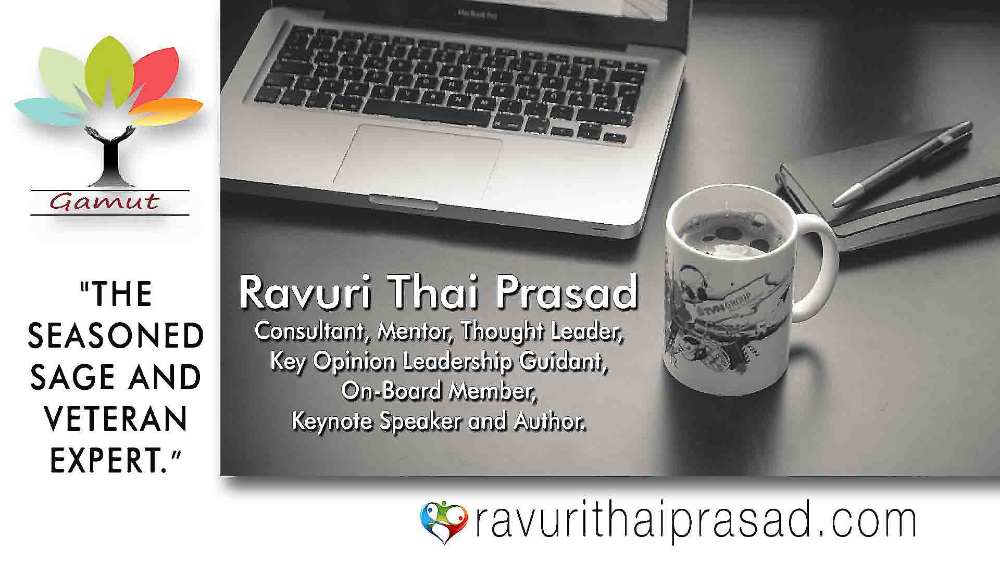What drives me in this work even at my age 72 years?
With over 50 years of experience, I have a proven track record of helping individuals and organizations achieve their goals. Driven by a strong belief in everyone's potential, I'm passionate about collaborating with you to unlock your full potential and turn your aspirations into reality.
I offer expertise in market trends and influence dynamics, customize services to specific needs, and deliver proven results, driving engagement, building trust, and enhancing brand loyalty.

THAIPRASAD'S#CereBraliant-Research for Innovative Research & Solutions in Hyper-Specialized Areas.
CereBraliant means Cerebrally Brilliant in Hyper-specilized niche-driven research areas. I am excited to introduce launching of the most-used my back-end Research hub to open-professional use on commercial basis, THAIPRASAD’S#Cerebraliant-Research Hub focusses on Neuro-marketing, Talent Dynamics, and advanced Knowledge enhancement for forward-thinking Business Strategies.
In an environment saturated with one-size-fits-all business solutions, THAIPRASAD’S#CereBraliant-Research distinguishes itself through over 15 years of experience.
I started this research for my Consultancy research as I am a forward-looking strategist, futurist, and consultant with nearly 50years of insight in neuro-marketing, talent optimization, medico-marketing, and corporate problem-solving.
This isn't merely another consulting-research organization. It's a think tank focused on the future of corporate and SME businesses. What are reasons to opt for THAIPRASAD’S#CereBraliant-Research?
- Specialized Research – Unlike larger firms, we focus intensely on specific challenges and deliver customized solutions.
- Over 50 Years of Business Experience – Grounded in practical knowledge rather than mere theoretical frameworks.
- Integration of AI & Forward-Thinking – We combine state-of-the-art AI tools with human insights to develop strategies for the future, not just the present.
- Ethical and Impact-Oriented Consulting – Our mission transcends profit; it’s about generating value, leaving a legacy, and ensuring sustainability.
- AI-Powered Solutions for Business Advancement. 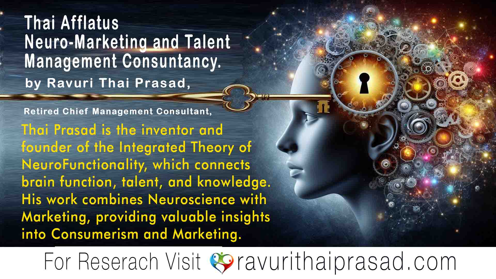
- Intelligence (neuro-functionality): Analyzing how our brains make choices.
- Selection (Talent): Determining what truly matters to people.
- Satisfaction (Knowledge): Developing avenues for meaningful fulfillment. By combining brain science, talent insight, and knowledge power, we help people and businesses thrive in simpler, smarter, and more authentic Scientific ways.
Neuro-marketing is a novel paradigm that investigates the relationship between human cerebral centres, talent expression, and knowledge assimilation. This integrated system is huge complex procedure to understand in satisfying needs through appropriate product, and paying price for that product in the marketplace.
At Thai Afflatus Neuro-marketing, my study focuses on the mind's journey to discover silent demands and external ways to meet them. I am fascinated by how consumers' brain higher centres function and respond when considering individuals as consumers and organizations as producers of goods.
Indeed, it is fascinating to consider that both the purchaser (consumer) and the manufacturer (producer) are human beings, yet their neuro-functionality, talent levels, and knowledge bases can differ significantly. This dynamic creates an interesting interplay in the marketplace.
At Thai Afflatus, we recognize that this eternal human journey is now carried out through neuromarketing, talent optimization, and knowledge management.
We assist firms and individuals in navigating the modern world by analyzing both primitive and evolved decision-making patterns, translating survival instincts into strategic market knowledge. We train businesses to understand consumer behavior, ensuring that every interaction provides actual value and satisfaction for all parties involved.
Our approach combines three key elements:Services
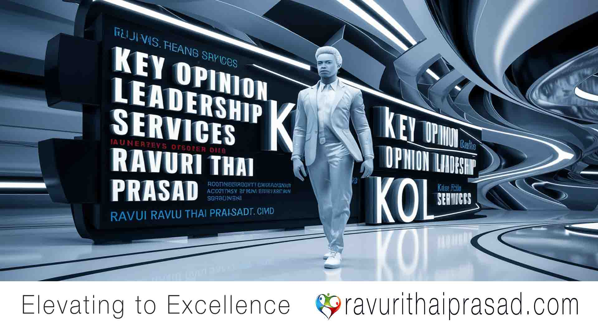The Pivotal Role of Key Opinion Leaders in Corporate Services In the context of organizational success, Key Opinion Leaders are influential figures playing a multifaceted role by leveraging their power and impact across various crucial domains within the organization. KOL figures drive decision-making, strategy formulation, and culture shaping, ultimately shaping the organization's overall success. Their influence can be observed in areas such as leadership, innovation, employee motivation, and stakeholder relationships, making their role pivotal in driving the organization forward. Beyond external-facing initiatives, KOLs also take on a crucial role in internal operations, leading training and mentorship programs aimed at enhancing employee skills and capabilities. Their involvement extends to improving sales pitches, expanding professional networks, and offering vital advisory services related to regulatory compliance. By leveraging the expertise of KOLs across these diverse areas, businesses can significantly improve their brand perception and fuel sustainable growth.
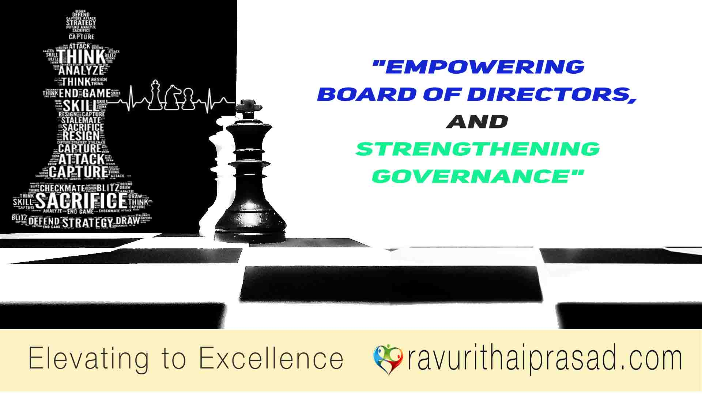On-Board Director Services to enhance Corporate Governance and Board Excellence Robust corporate governance is essential for an organization to navigate challenges, seize emerging opportunities, and achieve lasting success. I specialize in providing services to help companies, both small and large, in building top management capabilities, enhancing corporate governance, and achieving board excellence. My focus is on establishing strong corporate structures and promoting healthy governance to support long-term growth. My expertise includes creating effective governance frameworks, meeting compliance requirements, and implementing best practices for the board of directors. I aim to assist in forming a diverse, competent, and capable board that can offer effective guidance during times of change and uncertainty.
Give-Back
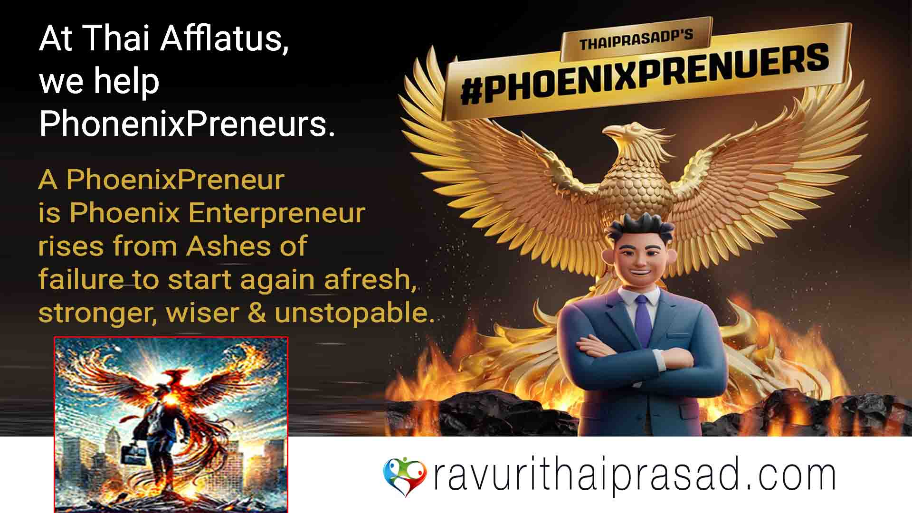Are you ready to rise again like “PHOENIX” after a business setback? Join us at Thai Afflatus, where I will help you emerge from the ashes, stronger than ever.
At Thai Afflatus, we empower resilient entrepreneurs to rise from setbacks and succeed. A PhoenixPreneur is not defined by failure, but by the strength to start again—stronger, wiser, and unstoppable.
Failures do not define you—your comeback does. Every great entrepreneur has faced challenges, but what sets true leaders apart is their ability to rise from the ashes. If your business has suffered losses, remember that it is not the end; it is a new beginning.
You are a PhoenixPreneur, reborn like a phoenix in the world of business. At Thai Afflatus, we believe in second chances. Our goal is to guide, mentor, and equip you with the right strategies to rebuild and re-launch your business with confidence. You are not alone on this journey. With the right mind-set, support, and vision, you can turn setbacks into stepping stones for success.
You are a visionary, and a leader who refuses to give up. Together, let’s transform your challenges into opportunities and help you soar higher than ever before. Join us at Thai Afflatus and ignite your comeback story.

RETIREES WEB.
Welcome to THAIPRASAD#Retirees-Web, a digital platform exclusively designed for retired professionals. My mission is to transform your experience, wisdom, and expertise into valuable income opportunities. This initiative reflects my commitment to "give back to the community," as I am also 73 years old and retired. I do not charge any fees or commissions.
For retirees, my website provides a way to monetize your knowledge as a service. After years of hard work, many professionals retire with a wealth of insights that often go underutilized. My platform connects you with businesses, start-ups, and professionals who could benefit from your guidance. It is a quality space for your areas of specialty, experience, expertise, and wisdom.
I can help you create stories, podcasts, blogs, and vlogs and develop your career. This way, you can establish a strong online presence in your area of expertise and potentially earn a part-time income through your hard work. Additionally, you will have the opportunity to connect with like-minded professionals and expand your network of potential clients.
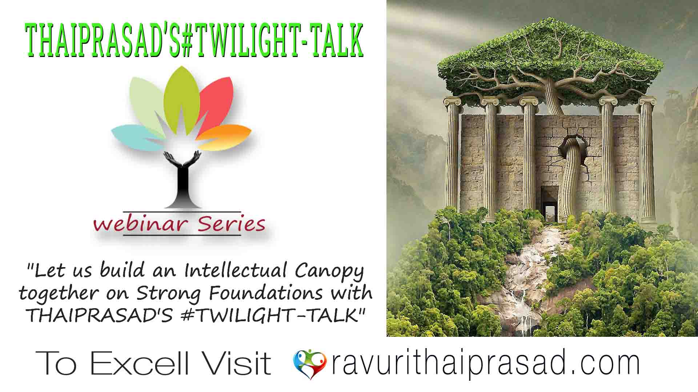I welcome you all to join me in my engaging webinar series, THAIPRASAD'S #TWILIGHT-TALK. There is where we explore topics pertinent to professionals and retirees alike. Together, we delve into insightful discussions, expert opinions, and practical advice aimed at assisting companies, career-developing fresher, and other professionals in navigating the evolving professional landscape and help loss-making companies to come out successfully.
Complementing our webinars, the Thai Afflatus video series on our YouTube channel offers daily content, with new videos released every other day. These videos are designed to enrich your professional journey, providing continuous learning and inspiration. Together, THAIPRASAD'S #TWILIGHT-TALK webinars and Thai Afflatus videos work hand in hand to up-skill today's professionals, SMEs offering a comprehensive resource to thrive in the modern marketplace. You can stay tuned for upcoming sessions and join our THAIPRASAD'S #TWILIGHT-TALK webinars community as we share knowledge, experiences, and wisdom to empower your professional journey.
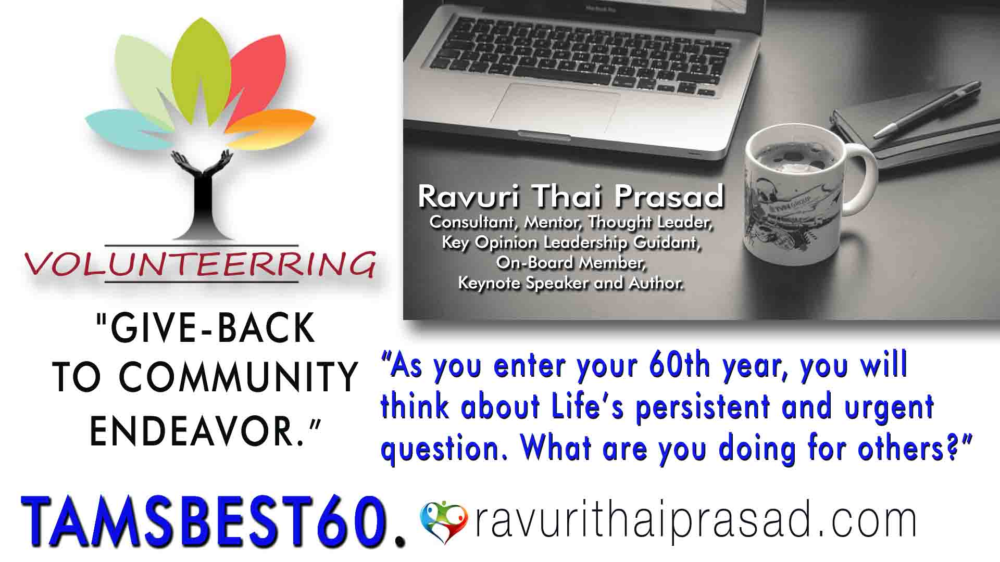TAMSBEST60 represents my commitment to making meaningful contributions after turning 60 years old. This initiative embodies the belief that our sixth decade is not an endpoint but rather a powerful beginning. It is a time when our accumulated wisdom, experience, and insights can significantly impact the lives of others.
Through TAMSBEST60, I channel decades of professional expertise into purposeful community service. This platform demonstrates that turning 60 is not about slowing down; it’s about redirecting our energy toward enriching the lives of younger generations through mentorship, knowledge sharing, and community building. Join me in reimagining what it means to be sixty and beyond. TAMSBEST60 proves that our greatest contributions often begin when we ask ourselves that crucial question: 'What am I giving to others?'"
I aim to foster meaningful connections between retired professionals and the younger generation. My goal is to create a dynamic environment where experience intersects with new opportunities for young people. Don’t let your knowledge remain untapped—use your lifetime of expertise to train and inspire the younger generation. They need your guidance. TAMSBEST60 embodies the legacy of giving back through volunteerism.
News
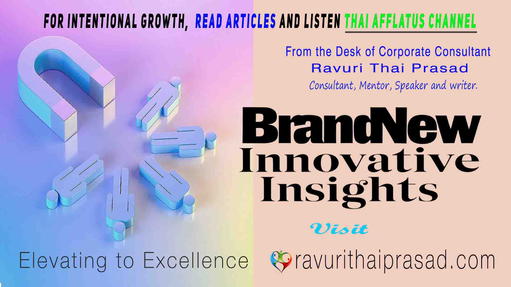BRANDNEW INNOVATIVE INSIGHTS: The "Brand New Innovative Insights" platform is an invaluable resource that delves into a myriad of captivating Articles, Success and Failure Stories, True Case Studies and practical strategies, propelling both individuals and organizations to reach new heights. Such writings empower readers to wholeheartedly embrace fresh perspectives, ignite breakthroughs, and attain unprecedented personal and professional growth. At the core of this transformative journey, I enable readers to hinge on the ability to unearth ground-breaking insights and drive innovation. Subscribe to my newsletter for the latest articles and updates, or request for a free consultation to discuss your specific needs. Join our dynamic community by following us on "ravurithaiprasad.com" and gain access to a wealth of valuable resources. "Brand New Innovative Insights" is not just information; it's an inclusive space for those seeking fresh perspectives and inspiration for success.
Check back regularly for updates and feel free to reach out to us for more information.
Talent
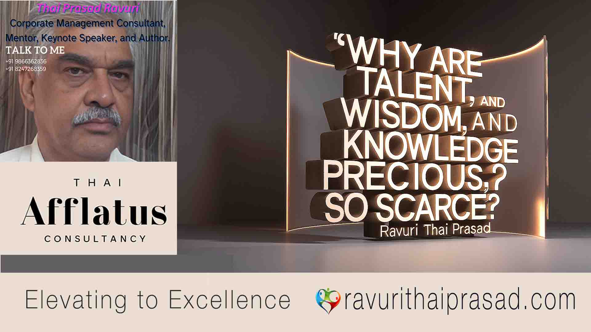 Talent, Knowledge, and Wisdom: The Pillars of personal and organisational GrowthIn personal, professional and organisational development, the dynamic interplay between talent, knowledge, expertise and wisdom lays the groundwork for success. Recognizing the inherent value of these elements and understanding how they work together is crucial for embarking on a purposeful journey of growth. Talent, Knowledge, Expertise and Wisdom however, are not merely a static quality; they all together, it is a dynamic entity that requires constant cultivation, nurturing and refinement. So, in today's competitive landscape, the ability to identify, develop, and retain such individuals is paramount. As organizations strive to maintain a competitive edge, the ability to identify, develops, and retain such top people has become a critical priority. The Talent, expertise, knowledge and wisdom possessed by these individuals serve as the wellspring of innovation and social development.
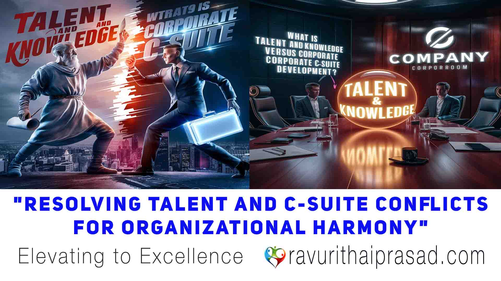The Clash of Titans and tension in Modern Workplaces between Talented Individuals and C-Suite Executives In today's dynamic corporate and SME landscape, a critical challenge emerges: the clash between ambitious, talented junior employees and deep-rooted, highly experienced C-suite executives within the same company. This conflict presents a unique dilemma as talented, knowledgeable individuals are rare and difficult to recruit, yet companies cannot afford to lose their most senior executives. The resulting tension can significantly hinder innovation and productivity. Such a clash will result in innovation paralysis, talent exodus, executive burnout, and cultural schism. Our specialized consultancy helps transform this potential conflict into a powerful driver of organizational growth and innovation. If you're interested in harnessing the full potential of your multi-generational workforce, contact us for a personalized consultation.
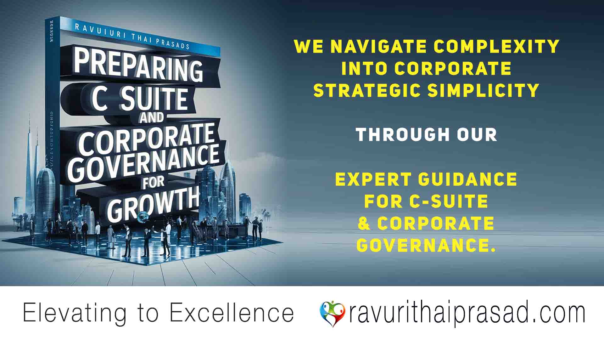
Preparing C-Suite and Corporate Governance for Growth.
At Talent-C Suite Mediators, we specialize in resolving conflicts between Talented Executives and the C-Suite, fostering collaboration that significantly enhances corporate governance and drives growth. By addressing these conflicts, we establish clear roles and responsibilities, promoting transparency and improving decision-making processes. This strengthens governance by ensuring accountability, ethical standards, and compliance with regulatory requirements. As a result, companies experience streamlined operations and optimized resources, leading to greater efficiency and productivity. Our approach encourages innovation and adaptability, giving your company a competitive edge. Additionally, strong corporate governance attracts top talent, enhances employee engagement, and improves customer satisfaction. Ultimately, resolving these conflicts lays a solid foundation for sustainable growth and a stronger brand reputation. Partner with us to transform your organizational dynamics and achieve lasting success.
The driving force behind my work is my passion for making a positive impact on SMEs and start-ups. With my specialized services and strategies, I help businesses and professionals navigate challenges and reach their full potential.
Contact Us
If you have any questions or would like to learn more about our services, please don't hesitate to contact us. You can reach us through the following methods:
- Email: curaltus@gmail.com.com
- Phone: +91-9866362836
- Address: Hyderabad - India
We look forward to hearing from you and working together to achieve your business goals.
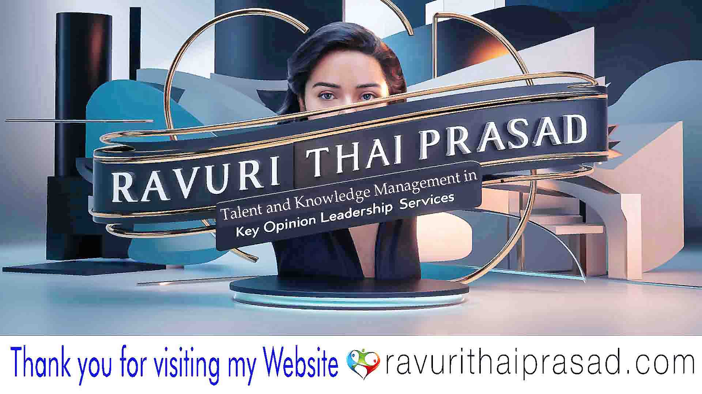ChatRTP™

Chat with Ravuri Thai Prasad (RTP) — ChatRTP™: A Pro Bono Community Service
Welcome to ChatRTP™
Even after retirement, requests for guidance, fresh ideas, and problem-solving support continue to come in. To make these exchanges accessible and organized, I have created ChatRTP™. This initiative is dedicated to personal growth, career advancement, and business success.
Who Can Benefit from ChatRTP™?
- Small & Medium Enterprises (SMEs): Businesses coping with financial strain, stagnation, or losses.
- Startups in Trouble: Ventures struggling with execution, scaling, direction, or market traction.
- Mid-Career Professionals: Anyone who has lost a job, feels overlooked, or is unsure about future prospects.
- Former Clients & Associates: Those needing psychology-informed advice for stress management, decision-making, or clarity.
ChatRTP™ Guidelines
- Engage in respectful and constructive conversations only.
- No discussions on politics, religion, caste, or creed.
- Do not share content, images, or materials that are anti-national, anti-community, anti-social, or related to terrorism.
- Any misuse will be addressed at my discretion or referred to relevant authorities if necessary.
ChatRTP™ Commitment
Free troubleshooting and growth guidance for SMEs, startups, and professionals — offered as a pro bono community service.
Social Media

Exploring the Impact of "THAI AFFLATUS": A YouTube Channel Offering Holistic Guidance and Professional Insights The THAI Afflatus YouTube Channel concept firmly asserts that personal growth involves a holistic approach, covering physical, emotional, mental, and spiritual well-being. In essence, THAI Afflatus encourages viewers to tap into their talents, knowledge, and wisdom to embrace an all-inclusive approach towards a meaningful life and cultivate innovative insights for personal growth with ethical norms and moral standards.